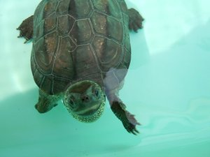

Home
基本情報
- 名前: 堀川 由人 (Horikawa Yuto)
- Internet Name: Hyrodium, ほりたみゅ
学職歴
- 2021/05-20xx/xx 大阪大学院(招聘研究員)
- 2020/01-20xx/xx Rist
- 2019/04-2019/12 DMG森精機
- 2017/04-2019/03 大阪大学院(修士過程)
- 2015/04-2017/03 大阪大学
- 2010/04-2015/03 大阪高専
自己紹介①
クサガメとアカピッピミシミシガメを飼っています.
 
自己紹介②
これは私の名刺です.